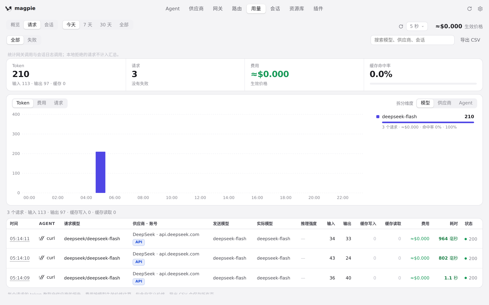
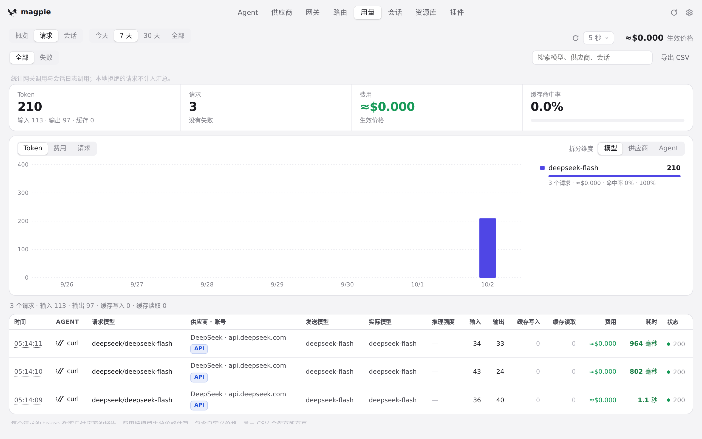
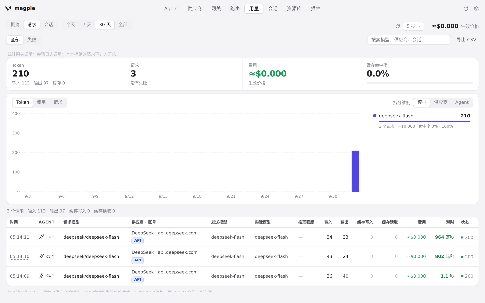
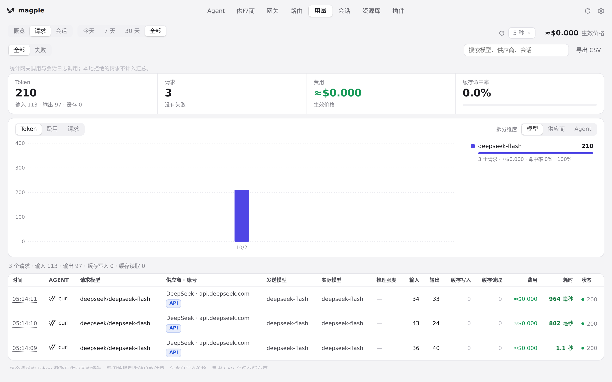

#513 界面预览
commit 3a87591 · 回到 PR · 用量页「请求」列表的筛选同步逻辑改了：切换时间范围后，如果已选的 Agent 或供应商在新范围里没有请求，magpie 现在会清空这个失效筛选、把分页复位到第一页并重新请求、在新结果返回后重绘列表，而不是像以前那样筛选器显示「全部」但列表仍停留在旧筛选的空结果上（此前只有网关密钥筛选是这么处理的）。
红线是鼠标走过的轨迹，红色圆环是一次点击；底部文字是这一步在做什么。空格暂停，← → 逐段查看。

用量「请求」：时间范围与 Agent / 供应商筛选 · 「请求」列表上方的时间范围，以及 Agent / 供应商 / 网关密钥三个筛选器
 用量「请求」：时间范围与 Agent / 供应商筛选 · 「请求」标签下的时间范围、搜索框与请求列表
用量「请求」：时间范围与 Agent / 供应商筛选 · 「请求」标签下的时间范围、搜索框与请求列表

用量「请求」：时间范围与 Agent / 供应商筛选 · 切到「7 天」后的时间范围与请求列表

用量「请求」：时间范围与 Agent / 供应商筛选 · 「30 天」下的时间范围与请求列表

用量「请求」：时间范围与 Agent / 供应商筛选 · 「全部」下的时间范围与请求列表